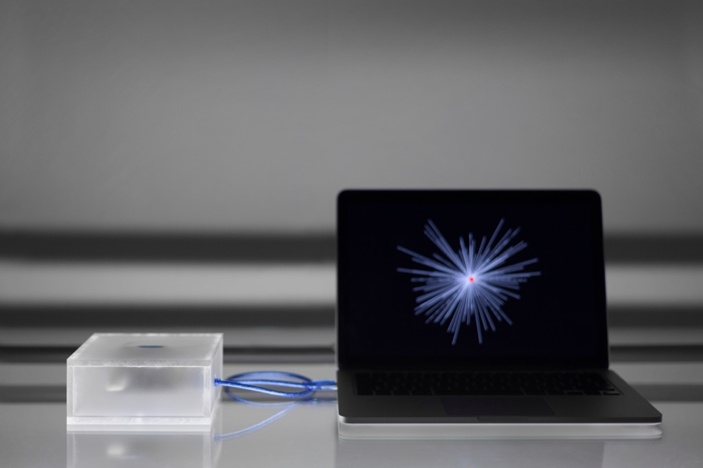

Site-specific installation at Fraunhofer Institute for Interfacial Engineering and Biotechnology IGB Stuttgart. The work embodies a diverse and biobased economy (bioeconomy) by displaying different facets of scientific research in this field.
Pi
Artwork
2022
Kinetic sculpture based on the noise of randomly distributed digits of pi. The noise appears as a seemingly inexhaustible well of non-periodic elements, setting the objects in motion.
Index of Noise
Research project
2019–Today
Ongoing artistic research project emerging from an eponymous work by Moritz Hundbiß and Robin Woern and Superposed Patterns by Niklas Thran.
Tabula Rasa
Artwork
2021
Data-driven video installation. Inspired by the philosophical concept of the clean slate, it explores the technology of Deep Reinforcement Learning in machine learning.

RN-Generator with Serial Interface
Artwork
2020
Experimental device that deals with the generation of random numbers (RN) based on environmental influences for use in visual design and image generation.